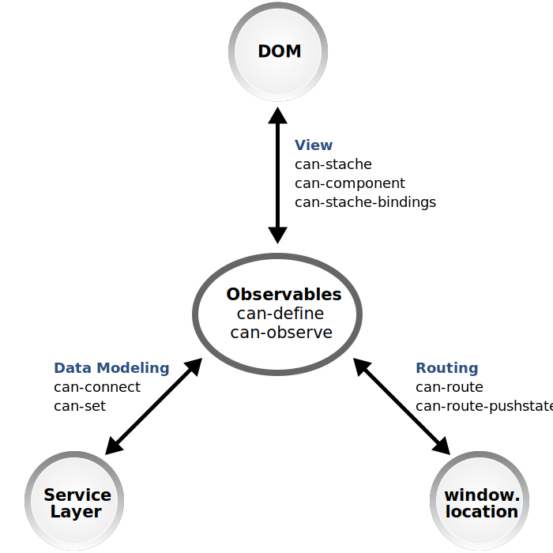

Guides
Welcome to CanJS! These guides are here to help you master CanJS development, get involved with the CanJS community, and contribute back to CanJS.
Development Guides
The following skill-tree diagram organizes our guides by topic vertically and by difficulty horizontally. Harder and longer guides to the right. This allows you to take the guides that fit your needs.
For example:
- A user new to JavaScript programming might start with the Technology Overview then try a few of the more simple guides: Chat Guide, Signup and Login, File Navigator.
- An advanced user might jump right to our most advanced guide - PlaceMyOrder.
We encourage everyone to take a look at:
- Technology Overview to understand CanJS’s core concepts.
- One of the Platform and Environment Integration guides to get CanJS working in your development and production environments.
- Debugging to know how to fix problems when they arise.
Note: Some of the following guides are on DoneJS.com. DoneJS is another framework built on top of CanJS. These DoneJS guides feature CanJS extensively and are extremely useful to understanding how to build a CanJS application even if you are not using DoneJS.
| Architecture | Technology Overview
Learn the basics of CanJS’s technology.  |
Chat Guide
This guide will walk you through building a real-time chat application with CanJS’s Core libraries. It takes about 30 minutes to complete. 
|
TodoMVC Guide
This guide will walk you through building a slightly modified version of TodoMVC with CanJS’s Core libraries and can-fixture. It takes about 1 hour to complete. 
|
PlaceMyOrder
Build and deploy a real-time, multi-page DoneJS application. 
|
| TodoMVC with StealJS
This tutorial walks through building TodoMVC with StealJS. It includes KeyNote presentations covering CanJS core libraries.
|
Bitballs
Walk through a DoneJS app built with PostgreSQL. 
|
|||
| Platform and Environment Integration | Setting Up CanJS
Learn how to install CanJS in your environment. 
|
DoneJS Chat
Deploy to a CDN. Build a desktop and mobile app. 
|
PlaceMyOrder
Setup continuous integration, continuous deployment. Deploy to a CDN. Build a desktop and mobile app. |
|
| Debugging | Debugging
Learn how to debug CanJS applications.  |
|||
| State Management | ATM Guide
This guide will walk you through building and testing an Automated Teller Machine (ATM) application with CanJS’s Core libraries. You’ll learn how to do test driven development (TDD) and manage complex state. It takes about 2 hours to complete. 
|
Credit Card
This advanced guide walks through building a simple credit card payment form with validations. It doesn’t use can-define. Instead it uses `Kefir.js` streams to make a ViewModel. can-kefir is used to make the Kefir streams observable to can-stache. 
|
||
| Testing |
ATM Guide
This guide will walk you through building and testing an Automated Teller Machine (ATM) application with CanJS’s Core libraries. You’ll learn how to do test driven development (TDD) and manage complex state. It takes about 2 hours to complete. |
Testing
Learn how to test CanJS applications. 
|
||
| Routing |
Bitballs
The Bitballs example routes between a large number of pages.
|
Routing
Learn how to make your application respond to changes in the URL and work with the browser’s back and forward buttons. 
|
||
| Data | File Navigator
This advanced guide walks you through building a file navigation widget that requests data with fetch. It takes about 45 minutes to complete. 
|
Service Layer
In progress. Help us by adding comments to the proposal. |
TodoMVC Guide
Learn how to retrieve, create, update, and delete items.
|
Bitballs
Learn how to connect to a service built on PostgreSQL, handle relationships, and sessions. |
| PlaceMyOrder
Build and deploy a real-time, CRUD DoneJS application.
|
Bitcentive
Example repo showing how to connect to a document-based data layer. 
|
|||
| Rich User Interfaces | Signup and Login
This beginner guide walks through building simple signup, login forms and a logout button. 
|
Forms
Learn how to create amazing `<form>`s with CanJS. 
|
Playlist Editor
Learn how to use YouTube’s API to search for videos and make a playlist. This makes authenticated requests with OAuth2. It uses jQuery++ for drag/drop events. It shows using custom attributes and custom events. This advanced guide takes an hour to complete. > This recipe uses YouTube API Services and follows YouTube Terms of Service > and Google Privacy Policy 
|
|
| Non-DOM API Integration | Canvas Clock
This beginner guide walks you through building a clock with the Canvas API. 
|
Weather Report
This beginner guide walks you through building a simple weather report widget. It takes about 25 minutes to complete. It was written with CanJS 6.2. |
CTA Bus Map
This intermediate guide walks you through showing Chicago Transit Authority (CTA) bus locations on a Google Map. You'll learn how to create a StacheElement that integrates with 3rd party widgets.  |
Text Editor
This intermediate guide walks you through building a basic rich text editor.  |
Community
Once you’ve committed to CanJS, it’s important that you keep liking it and get better at using it.
CanJS’s community has lots of people who can offer advice and tips on how to build an application the right way. Instead of struggling, please join our Slack and ask for advice in the #canjs channel or the forums. Share a screenshot of what you’re building and we’ll tell you what needs to be done.
To stay up on CanJS’s latest news, we suggest:
- Following @CanJS on twitter.
- Subscribing to Bitovi’s development blog.
To get hands-on instruction, sign up for a DoneJS meetup in your area:
- Boston
- Chicago
- Ft. Lauderdale
- Los Angeles
- New York
- Phoenix
- Raleigh-Durham
- San Francisco
- Seattle
- Silicon Valley
If you’ve already committed to CanJS and are looking to move to 3.0, read Migrating to CanJS 3.
Contributing
Once you’ve settled down with CanJS, it’s time to think about adding extensions and improvements to the framework of your own. There are many ways to contribute to CanJS, including:
- Report a bug
- Suggest a feature
- Code changes
- Documentation improvements
- Create a plugin
- Evangelism - Blog, meetup and conference talks
- Releases - Maintaining CanJS
CanJS is managed by the DoneJS Contributors Team. All contributions from all types of contributors are welcome. Contributing to an Open Source project can be an intimidating experience. We’re committed to making the experience as pleasant and rewarding as possible. We’re happy to set up a pairing session to show you how to fix a bug or write a feature.
If you have any questions, you can always join our Slack and reach us in the #canjs channel.
If you want to become a CanJS contributor, you simply have to:
- Email the core team expressing your interest.
- Attend the weekly DoneJS Contributors meeting twice a month. DoneJS Calendar.
- Make one small contribution, even a spelling correction, a month.
Issues that should be easy for a new contributor to pick up have an “easy” label. This GitHub search makes it easy to find easy issues across all the CanJS repositories.